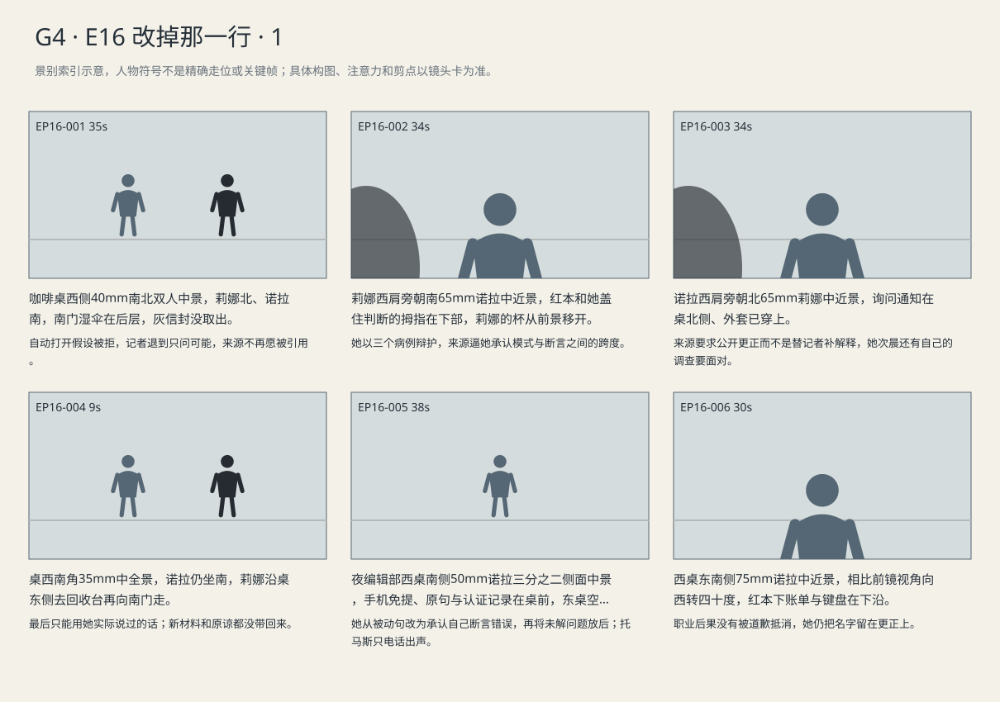
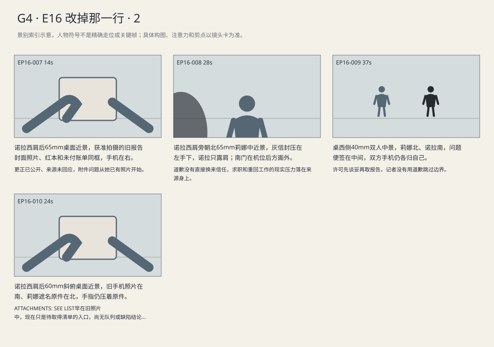

来源拒绝提供新的确定性；诺拉当夜以自己为主语公开更正，两日后接受不录音、不擅自发表等边界。
剧本Markdown · 全部独立复制稿 · 英语字幕 · 中文字幕
详细剧本
E15-SC04 · 傍晚·同日临近18:00至天色转暗 · CAFE
当天傍晚将近六点，咖啡店西窗是阴雨里的暗蓝天光，东吧台亮着暖灯。西北桌莉娜坐北，包口朝自己，诺拉坐南；湿伞立在南门，灰信封始终未取出。
咖啡桌上诺拉将已公开的认证记录推向莉娜，要她解释怎样仍可能没人读。莉娜只看了一页，便把记录推回她那边，不像上次那样交出新材料。
诺拉（英语，先找一个能保住旧说法的解释）：Could that be automatic? Like the screen just opens?
中文对照：会不会是自动的？比如页面自己打开？
莉娜（英语，把文件推还，不交给她新的断言）：You want me to say yes. I can't prove that.
中文对照：你想让我说是，可我证明不了。
莉娜将认证记录推回，诺拉把其中一页转了九十度，指着访问时间再问。莉娜没有接笔，也没有替她把空白处补成技术说明。
诺拉（英语，降低请求口气，仍想得到可引用解释）：I'm not asking you to prove it. Could it happen?
中文对照：我没让你证明，就问有没有可能。
莉娜（英语，识破用途）：And then you write that I said it could.
中文对照：然后你就写我说有可能。
诺拉（英语，争取一次信任）：I'd check it.
中文对照：我会再核实。
莉娜（英语，不接受未来承诺替代旧记录）：You were going to check last time.
中文对照：上次你也是要核实。
莉娜让诺拉翻回第一次的笔记，那句没看过访问记录仍在那里。诺拉拇指盖住自己当时写的判断，莉娜把杯子端离文件，不再替她看下一页。
莉娜（英语，回到第一次实际说过的限制，不把没看过偷换成没持有）：I told you I hadn't seen the logs. You wrote it down.
中文对照：我说过，我没看过访问记录。你自己都记下来了。
诺拉（英语，承认自己的推断，不把责任推回来源）：I thought three cases was enough.
中文对照：我以为三个案子就够了。
诺拉拇指仍压着自己的判断。莉娜没有把她的手拿开，只让她顺着前一行读；南门有人进来，两人让服务员从桌东侧经过。
莉娜（英语，要求她说清推论跨度）：Enough for what? I gave you three cases to check.
中文对照：够说明什么？我给三个案子，是让你查。
诺拉（英语，仍想依靠模式辩护）：The same thing kept happening.
中文对照：同样的事一直在发生。
莉娜（英语，拒绝被用作确定性来源）：Then write that. You didn't need to make me say the rest.
中文对照：那就写那个。不用把后面的也算我说的。
诺拉的手机提醒六点已到。莉娜从包里取出自己的停权与询问通知放到桌边，穿好外套；诺拉没有拿来拍，也没有新打开记录。
诺拉（英语，想让对方看到自己也有损失）：They pulled the follow-up.
中文对照：续稿被撤了。
莉娜（英语，把自己的正式通知放到桌边）：I have to answer this in the morning.
中文对照：我明早得答复这个。
诺拉看了一眼六点提醒，再看莉娜放到桌边的正式询问通知。莉娜把日期朝自己转回去，她没有答应让记者拍。
诺拉（英语，第一次提出自己承担记录）：I can explain that you warned me.
中文对照：我可以说明你提醒过我。
莉娜（英语，两个世界的代价不相等）：To who? Your editor? The people asking me for every message?
中文对照：跟谁说明？你编辑，还是那些要我交全部消息的人？
诺拉（英语，不再讨一条解释公司的引语）：In the correction.
中文对照：写进更正。
莉娜（英语，将纠错责任退回作者）：Then write it. Don't ask me to fix it first.
中文对照：那就写，别先来找我替你补。
莉娜把通知收回包，拿杯去回收台，向南门走。诺拉问能否引用，她没有回座，只指一下还打开的第一次笔记。
诺拉（英语，人已经要走，仍追一条可用答复）：What can I use?
中文对照：那我能用什么？
莉娜（英语，指第一次笔记，没回座也没给新结论）：Use what I actually told you.
中文对照：就用我当时真跟你说的。
E18-SC01 · 夜·真实访问反证公布及咖啡店争执的同日晚间 · NEWSROOM
同日晚间编辑部东桌已空，西桌只亮诺拉的工作灯。黑手机免提放在更正打印稿旁，红本压着未付账单，托马斯的声音从手机传来，人不在房间。
电话指出被动句；诺拉划掉短语，重写自己作主语，念出错误所在。
编辑托马斯电话声音（英语，不接被动说法，等她自己回答）：Cut 'was misunderstood.' What did you get wrong?
中文对照：把“被误解”删掉。你到底错在哪儿？
诺拉（英语，直接读出自己发表过的断言）：I wrote, 'Nobody opened the files.' I can't back that up.
中文对照：我写了“没人打开过文件”。我拿不出证据。
诺拉把删去的被动句留在修订记录，将公司真实访问证明与自己的原句并排。她想在下一段先写尚未得到的材料，托马斯要求她先把错误说完。
诺拉（英语，怕更正会把调查一起抹去）：We still don't know whether they read everything.
中文对照：我们还是不知道他们有没有读完所有材料。
编辑托马斯电话声音（英语，保留调查空间，拒绝转移）：Say that after the correction. Don't use it to get around what we do know.
中文对照：放在更正后面。别拿它绕开已经知道的事。
诺拉（英语，先承担已证实的错误）：Okay. Someone accessed the page. My sentence was wrong.
中文对照：好，有人访问过页面。我那句写错了。
诺拉听到委约暂停，伸手塞账单，听完要求后停在半途，转问署名。
编辑托马斯电话声音（英语，工作安排说完便停，不安慰）：We're holding your next assignment. Legal needs your notes and source files tonight.
中文对照：你下一篇先停了。法务今晚就要你的笔记和原始采访资料。
诺拉（英语，先确认自己要承担的署名）：My name stays on the correction?
中文对照：更正还署我的名字？
诺拉把更正页转回自己，指尖停在发送键前，等编辑确认署名。
编辑托马斯电话声音（英语，把发布决定留给她）：Yes. Are you ready?
中文对照：对。可以发了吗？
诺拉（英语，决定）：Send it. Leave my name on.
中文对照：发吧。名字留下。
她按发送，等更正出现已发送状态，结束编辑通话。随后打开莉娜联系人拨号；线路转入语音信箱。提示末声结束，她将获准封面照片打印件拉到灯下，低声留言。
诺拉（英语，留言只留来意，不抢先解释自己）：Lena, it's Nora. The correction's up. I've still got questions about your report. Call me when you can.
中文对照：莉娜，是诺拉。更正发了。你的报告还有几处我想问问。方便的话，给我回个电话。
留言结束，她把手机放回桌右，灯下留下封面照片打印件和红本。
E18-SC03 · 下午·上述更正发布两日后 · CAFE
更正发布两日后下午，西北咖啡桌莉娜坐北，灰信封紧挨左手、手机扣着，诺拉坐南，红本仍在膝上；东侧磨豆机的工作声停下，她才开口。
诺拉等磨豆机停后道歉，莉娜不松信封，直接把律师的警惕说给她。
诺拉（英语，不要求对方接住这句道歉）：You didn't say that. I put it in the story. I'm sorry.
中文对照：那些话不是你说的，是我写进报道的。对不起。
莉娜（英语，信封仍压着，先说出防备）：My lawyer said you'd come back for another quote.
中文对照：我的律师说，你还会来找我要一句话。
她说面试安排，同时把信封收近包口；诺拉收回原想开本子的手。
莉娜（英语，有求职安排，不再承担记者的取材风险）：I've got an interview Monday. I need to get back to work. I'm not doing this again.
中文对照：我周一有面试。我得回去工作。我不想再来一次。
诺拉把问题便签放桌中，说明不是正式受访请求；莉娜读到附件清单字样后停止收包。
诺拉（英语，只放下问题便签，不打开录音）：We can keep this off the record. What did I miss?
中文对照：这次可以不写进报道。我到底漏了什么？
莉娜没有立即拿出报告，先把诺拉的问题便签转到桌中，指着她还在口袋里的手机。诺拉将空着的双手放上桌。
莉娜（英语，限定本次谈话）：Nothing from today goes in a story unless we agree later.
中文对照：今天说的，以后另说之前都不能写。
诺拉（英语，接受具体规则）：Agreed. No recording. I'll ask before I use anything.
中文对照：同意。不录，用之前先问你。
莉娜（英语，把自己生活留在自己手里）：Don't contact the places I'm applying to.
中文对照：也别去联系我投简历的地方。
诺拉（英语，不索取新交换条件）：I understand.
中文对照：明白。
莉娜取原报告遮住姓名，指附件提示；诺拉从右衣袋取手机，打开获准拍的去身份照片核对，再把红本上桌记问题，不新拍患者资料。
莉娜（英语，指着已有照片能核到的那一行）：You copied the date. What about 'attachments: see list'? It's right there in the photo I let you take.
中文对照：日期你抄了。“附件：见清单”呢？我让你拍的那张照片里就有。
诺拉（英语，核对到旧照片里的那行）：I see it.
中文对照：我看到了。
景别索引板
简化人物符号仅用于检索景别。完整镜头卡、信息变化及相邻剪点另页阅读。


逐镜复制稿
EP16-001 · 制作号E15-SH012 · 35s · 咖啡桌西侧40mm南北双人中景，莉娜北、诺拉南，南门湿伞在后层，灰信封没取出。
自动打开假设被拒，记者退到只问可能，来源不再愿被引用。
成片采用 [0,35) 秒；2个生成候选，技术边界不是剪点。候选未生成。
成片镜 E15-SH012 共35秒；下面2个独立生成候选共同服务本镜。技术接续不等于成片剪点，不能将本文件整段提交为一次任务。先制作并核验连续表演、机位和声线，再决定延长或覆盖方案；当前无实际媒体。
【E15-SH012-G01 · 本镜采用 0—13 秒】
16:9横屏，当代美国真人现实悬疑。环境低至中等饱和，人物肤色保持真实差异与自然纹理；深黑保留衣料和道具分离，白纸与白领高光柔和有层次。冷暖来自本镜已有物理光源，不统一青橙、不磨皮、不以整体欠曝制造悬疑。遵循本镜机位、表演与焦点，不擅自追加缓推、急变焦或摇晃。
场次风格：本场时段：傍晚·同日临近18:00至天色转暗。本场为傍晚过渡，窗外亮度只按正文已有暮光维持，不改成正午直射；场内既有灯具的明暗关系连续。 本地光色与材质：西窗与东吧台暖补依时段分区，杯子、纸件、橄榄开衫保持日常颜色；眼镜反射保留但不遮蔽关键眼神。桌边距离和交出哪一页比装饰虚化更重要。
总生成长度15秒，为中间13秒采用区间保留开头和结尾各1秒自然余量，不增添剧情。
人物：
以下为连续镜的身份库；人物是否已入画、离场及持物只依本段起态与动作，不能把整镜所有角色同时塞入本段。
莉娜，41岁白人女性，棕黑发低髻、薄金属框眼镜、橄榄绿开衫、白棉衬衫、炭灰裤，灰色文件信封。声音较轻、谨慎，有被追问后的停顿。
诺拉，32岁华裔美国女性，黑色齐肩直发、灰蓝大衣、米白衬衫、深色牛仔裤、黑鞋，红皮笔记本和黑手机。声音明亮清楚，采访时给对方说完。
环境与光源：入口南、吧台东、西窗、二人桌西北；莉娜坐北侧看得见南门，诺拉坐南侧。西窗仅余正文明确的暮光，东吧台既有暖灯维持桌边照明；不启用白昼窗光。不得反打后两人交换位置。
景别/机位：咖啡桌西侧40mm南北双人中景
构图：沿用该成片镜既定机位和场景方向；当前站位、朝向与持物：诺拉红本未开，莉娜双手抱热杯。
起始画面：诺拉红本未开，莉娜双手抱热杯。
事件与表演：咖啡桌上诺拉将已公开的认证记录推向莉娜，要她解释怎样仍可能没人读。莉娜只看了一页，便把记录推回她那边，不像上次那样交出新材料。
注意力变化：诺拉红本未开，莉娜双手抱热杯。 → 她没拿到反驳反证的证据，来源不再补缺口。
摄影机：固定35秒，公开认证记录由南推北又被推回。
焦点：仅响应本段当前动作与受话关系；不预先转向尚未发生的后段事件。
结束状态：她没拿到反驳反证的证据，来源不再补缺口。
声音：<咖啡店低位通风与远桌不可辨人声；当前空间连续环境底声；拟音只随本段真实动作与物件接触发生，已完成事件不重演；可辨英语仅为下列本段对白。>
(无背景音乐，场内连续底声承担空间与节奏。)
准确对白按顺序：
诺拉向莉娜，先找一个能保住旧说法的解释，只使用英语说一次：{Could that be automatic? Like the screen just opens?}
莉娜向诺拉，把文件推还，不交给她新的断言，只使用英语说一次：{You want me to say yes. I can't prove that.}
只说列出的英语原句；导演说明不发声，不说中文译文，不额外加旁白或对白。手机/公文/字幕均由后期叠加，生成画面不排字。单镜连续，不加入内部切镜；前后保持身份、服装、门窗、物件与接触状态一致。
【E15-SH012-G02 · 本镜采用 13—35 秒】
16:9横屏，当代美国真人现实悬疑。环境低至中等饱和，人物肤色保持真实差异与自然纹理；深黑保留衣料和道具分离，白纸与白领高光柔和有层次。冷暖来自本镜已有物理光源，不统一青橙、不磨皮、不以整体欠曝制造悬疑。遵循本镜机位、表演与焦点，不擅自追加缓推、急变焦或摇晃。
场次风格：本场时段：傍晚·同日临近18:00至天色转暗。本场为傍晚过渡，窗外亮度只按正文已有暮光维持，不改成正午直射；场内既有灯具的明暗关系连续。 本地光色与材质：西窗与东吧台暖补依时段分区，杯子、纸件、橄榄开衫保持日常颜色；眼镜反射保留但不遮蔽关键眼神。桌边距离和交出哪一页比装饰虚化更重要。
总生成长度24秒，为中间22秒采用区间保留开头和结尾各1秒自然余量，不增添剧情。
人物：
以下为连续镜的身份库；人物是否已入画、离场及持物只依本段起态与动作，不能把整镜所有角色同时塞入本段。
莉娜，41岁白人女性，棕黑发低髻、薄金属框眼镜、橄榄绿开衫、白棉衬衫、炭灰裤，灰色文件信封。声音较轻、谨慎，有被追问后的停顿。
诺拉，32岁华裔美国女性，黑色齐肩直发、灰蓝大衣、米白衬衫、深色牛仔裤、黑鞋，红皮笔记本和黑手机。声音明亮清楚，采访时给对方说完。
环境与光源：入口南、吧台东、西窗、二人桌西北；莉娜坐北侧看得见南门，诺拉坐南侧。西窗仅余正文明确的暮光，东吧台既有暖灯维持桌边照明；不启用白昼窗光。不得反打后两人交换位置。
景别/机位：咖啡桌西侧40mm南北双人中景
构图：沿用该成片镜既定机位和场景方向；当前站位、朝向与持物：她没拿到反驳反证的证据，来源不再补缺口。
起始画面：她没拿到反驳反证的证据，来源不再补缺口。
事件与表演：莉娜将认证记录推回，诺拉把其中一页转了九十度，指着访问时间再问。莉娜没有接笔，也没有替她把空白处补成技术说明。
注意力变化：她没拿到反驳反证的证据，来源不再补缺口。 → 诺拉把访问页放下，只能打开第一次的采访笔记。
摄影机：固定35秒，公开认证记录由南推北又被推回。
焦点：仅响应本段当前动作与受话关系；不预先转向尚未发生的后段事件。
结束状态：诺拉把访问页放下，只能打开第一次的采访笔记。
声音：<咖啡店低位通风与远桌不可辨人声；当前空间连续环境底声；拟音只随本段真实动作与物件接触发生，已完成事件不重演；可辨英语仅为下列本段对白。>
(无背景音乐，场内连续底声承担空间与节奏。)
准确对白按顺序：
诺拉向莉娜，降低请求口气，仍想得到可引用解释，只使用英语说一次：{I'm not asking you to prove it. Could it happen?}
莉娜向诺拉，识破用途，只使用英语说一次：{And then you write that I said it could.}
诺拉向莉娜，争取一次信任，只使用英语说一次：{I'd check it.}
莉娜向诺拉，不接受未来承诺替代旧记录，只使用英语说一次：{You were going to check last time.}
只说列出的英语原句；导演说明不发声，不说中文译文，不额外加旁白或对白。手机/公文/字幕均由后期叠加，生成画面不排字。单镜连续，不加入内部切镜；前后保持身份、服装、门窗、物件与接触状态一致。静帧起态备稿
16:9横屏，当代美国真人现实悬疑。环境低至中等饱和，人物肤色保持真实差异与自然纹理；深黑保留衣料和道具分离，白纸与白领高光柔和有层次。冷暖来自本镜已有物理光源，不统一青橙、不磨皮、不以整体欠曝制造悬疑。遵循本镜机位、表演与焦点，不擅自追加缓推、急变焦或摇晃。
场次风格：本场时段：傍晚·同日临近18:00至天色转暗。本场为傍晚过渡，窗外亮度只按正文已有暮光维持，不改成正午直射；场内既有灯具的明暗关系连续。 本地光色与材质：西窗与东吧台暖补依时段分区，杯子、纸件、橄榄开衫保持日常颜色；眼镜反射保留但不遮蔽关键眼神。桌边距离和交出哪一页比装饰虚化更重要。
莉娜，41岁白人女性，棕黑发低髻、薄金属框眼镜、橄榄绿开衫、白棉衬衫、炭灰裤，灰色文件信封。声音较轻、谨慎，有被追问后的停顿。
诺拉，32岁华裔美国女性，黑色齐肩直发、灰蓝大衣、米白衬衫、深色牛仔裤、黑鞋，红皮笔记本和黑手机。声音明亮清楚，采访时给对方说完。
入口南、吧台东、西窗、二人桌西北；莉娜坐北侧看得见南门，诺拉坐南侧。西窗仅余正文明确的暮光，东吧台既有暖灯维持桌边照明；不启用白昼窗光。不得反打后两人交换位置。
咖啡桌西侧40mm南北双人中景，莉娜北、诺拉南，南门湿伞在后层，灰信封没取出。；起态构图：诺拉红本未开，莉娜双手抱热杯。。空间方位按上列环境，人物只处于起态；本镜后续调度不出现在静帧。此图不描画尚未发生的动作，不生成字幕和公文长字。
| 英语原句 | 中文对照 | 预定窗口 |
|---|
| 诺拉：Could that be automatic? Like the screen just opens? | 会不会是自动的？比如页面自己打开？ | 1–5.7s |
| 莉娜：You want me to say yes. I can't prove that. | 你想让我说是，可我证明不了。 | 6–11.7s |
| 诺拉：I'm not asking you to prove it. Could it happen? | 我没让你证明，就问有没有可能。 | 14–17.92s |
| 莉娜：And then you write that I said it could. | 然后你就写我说有可能。 | 18.22–21.75s |
| 诺拉：I'd check it. | 我会再核实。 | 22.05–23.23s |
| 莉娜：You were going to check last time. | 上次你也是要核实。 | 23.53–26.27s |
观众信息：记者争一个能救原文的解释，来源拒绝再为她提供确定性。 → 诺拉把访问页放下，只能打开第一次的采访笔记。
切点：莉娜要求她翻回旧笔记，切到记者如何看自己的记录。
接口：接E15-SH013；莉娜要求她翻回旧笔记，切到记者如何看自己的记录。
EP16-002 · 制作号E15-SH013 · 34s · 莉娜西肩旁朝南65mm诺拉中近景，红本和她盖住判断的拇指在下部，莉娜的杯从前景移开。
她以三个病例辩护，来源逼她承认模式与断言之间的跨度。
成片采用 [35,69) 秒；2个生成候选，技术边界不是剪点。候选未生成。
成片镜 E15-SH013 共34秒；下面2个独立生成候选共同服务本镜。技术接续不等于成片剪点，不能将本文件整段提交为一次任务。先制作并核验连续表演、机位和声线，再决定延长或覆盖方案；当前无实际媒体。
【E15-SH013-G01 · 本镜采用 0—12 秒】
16:9横屏，当代美国真人现实悬疑。环境低至中等饱和，人物肤色保持真实差异与自然纹理；深黑保留衣料和道具分离，白纸与白领高光柔和有层次。冷暖来自本镜已有物理光源，不统一青橙、不磨皮、不以整体欠曝制造悬疑。遵循本镜机位、表演与焦点，不擅自追加缓推、急变焦或摇晃。
场次风格：本场时段：傍晚·同日临近18:00至天色转暗。本场为傍晚过渡，窗外亮度只按正文已有暮光维持，不改成正午直射；场内既有灯具的明暗关系连续。 本地光色与材质：西窗与东吧台暖补依时段分区，杯子、纸件、橄榄开衫保持日常颜色；眼镜反射保留但不遮蔽关键眼神。桌边距离和交出哪一页比装饰虚化更重要。
总生成长度14秒，为中间12秒采用区间保留开头和结尾各1秒自然余量，不增添剧情。
人物：
以下为连续镜的身份库；人物是否已入画、离场及持物只依本段起态与动作，不能把整镜所有角色同时塞入本段。
诺拉，32岁华裔美国女性，黑色齐肩直发、灰蓝大衣、米白衬衫、深色牛仔裤、黑鞋，红皮笔记本和黑手机。声音明亮清楚，采访时给对方说完。
莉娜，41岁白人女性，棕黑发低髻、薄金属框眼镜、橄榄绿开衫、白棉衬衫、炭灰裤，灰色文件信封。声音较轻、谨慎，有被追问后的停顿。
环境与光源：入口南、吧台东、西窗、二人桌西北；莉娜坐北侧看得见南门，诺拉坐南侧。西窗仅余正文明确的暮光，东吧台既有暖灯维持桌边照明；不启用白昼窗光。不得反打后两人交换位置。
景别/机位：莉娜西肩旁朝南65mm诺拉中近景
构图：沿用该成片镜既定机位和场景方向；当前站位、朝向与持物：诺拉把访问页放下，只能打开第一次的采访笔记。
起始画面：诺拉把访问页放下，只能打开第一次的采访笔记。
事件与表演：莉娜让诺拉翻回第一次的笔记，那句没看过访问记录仍在那里。诺拉拇指盖住自己当时写的判断，莉娜把杯子端离文件，不再替她看下一页。
注意力变化：诺拉把访问页放下，只能打开第一次的采访笔记。 → 早有的警告被重新看见，来源不会再替报道补确定性。
摄影机：固定34秒，不用纸件特写替她承受对话。
焦点：仅响应本段当前动作与受话关系；不预先转向尚未发生的后段事件。
结束状态：早有的警告被重新看见，来源不会再替报道补确定性。
声音：<咖啡店低位通风与远桌不可辨人声；当前空间连续环境底声；拟音只随本段真实动作与物件接触发生，已完成事件不重演；可辨英语仅为下列本段对白。>
(无背景音乐，场内连续底声承担空间与节奏。)
准确对白按顺序：
莉娜向诺拉，回到第一次实际说过的限制，不把没看过偷换成没持有，只使用英语说一次：{I told you I hadn't seen the logs. You wrote it down.}
诺拉向莉娜，承认自己的推断，不把责任推回来源，只使用英语说一次：{I thought three cases was enough.}
只说列出的英语原句；导演说明不发声，不说中文译文，不额外加旁白或对白。手机/公文/字幕均由后期叠加，生成画面不排字。单镜连续，不加入内部切镜；前后保持身份、服装、门窗、物件与接触状态一致。
【E15-SH013-G02 · 本镜采用 12—34 秒】
16:9横屏，当代美国真人现实悬疑。环境低至中等饱和，人物肤色保持真实差异与自然纹理；深黑保留衣料和道具分离，白纸与白领高光柔和有层次。冷暖来自本镜已有物理光源，不统一青橙、不磨皮、不以整体欠曝制造悬疑。遵循本镜机位、表演与焦点，不擅自追加缓推、急变焦或摇晃。
场次风格：本场时段：傍晚·同日临近18:00至天色转暗。本场为傍晚过渡，窗外亮度只按正文已有暮光维持，不改成正午直射；场内既有灯具的明暗关系连续。 本地光色与材质：西窗与东吧台暖补依时段分区，杯子、纸件、橄榄开衫保持日常颜色；眼镜反射保留但不遮蔽关键眼神。桌边距离和交出哪一页比装饰虚化更重要。
总生成长度24秒，为中间22秒采用区间保留开头和结尾各1秒自然余量，不增添剧情。
人物：
以下为连续镜的身份库；人物是否已入画、离场及持物只依本段起态与动作，不能把整镜所有角色同时塞入本段。
诺拉，32岁华裔美国女性，黑色齐肩直发、灰蓝大衣、米白衬衫、深色牛仔裤、黑鞋，红皮笔记本和黑手机。声音明亮清楚，采访时给对方说完。
莉娜，41岁白人女性，棕黑发低髻、薄金属框眼镜、橄榄绿开衫、白棉衬衫、炭灰裤，灰色文件信封。声音较轻、谨慎，有被追问后的停顿。
环境与光源：入口南、吧台东、西窗、二人桌西北；莉娜坐北侧看得见南门，诺拉坐南侧。西窗仅余正文明确的暮光，东吧台既有暖灯维持桌边照明；不启用白昼窗光。不得反打后两人交换位置。
景别/机位：莉娜西肩旁朝南65mm诺拉中近景
构图：沿用该成片镜既定机位和场景方向；当前站位、朝向与持物：早有的警告被重新看见，来源不会再替报道补确定性。
起始画面：早有的警告被重新看见，来源不会再替报道补确定性。
事件与表演：诺拉拇指仍压着自己的判断。莉娜没有把她的手拿开，只让她顺着前一行读；南门有人进来，两人让服务员从桌东侧经过。
注意力变化：早有的警告被重新看见，来源不会再替报道补确定性。 → 诺拉移开拇指，自己的批量签名推断与来源限定同时露出来。
摄影机：固定34秒，不用纸件特写替她承受对话。
焦点：仅响应本段当前动作与受话关系；不预先转向尚未发生的后段事件。
结束状态：诺拉移开拇指，自己的批量签名推断与来源限定同时露出来。
声音：<咖啡店低位通风与远桌不可辨人声；当前空间连续环境底声；拟音只随本段真实动作与物件接触发生，已完成事件不重演；可辨英语仅为下列本段对白。>
(无背景音乐，场内连续底声承担空间与节奏。)
准确对白按顺序：
莉娜向诺拉，要求她说清推论跨度，只使用英语说一次：{Enough for what? I gave you three cases to check.}
诺拉向莉娜，仍想依靠模式辩护，只使用英语说一次：{The same thing kept happening.}
莉娜向诺拉，拒绝被用作确定性来源，只使用英语说一次：{Then write that. You didn't need to make me say the rest.}
只说列出的英语原句；导演说明不发声，不说中文译文，不额外加旁白或对白。手机/公文/字幕均由后期叠加，生成画面不排字。单镜连续，不加入内部切镜；前后保持身份、服装、门窗、物件与接触状态一致。静帧起态备稿
16:9横屏，当代美国真人现实悬疑。环境低至中等饱和，人物肤色保持真实差异与自然纹理；深黑保留衣料和道具分离，白纸与白领高光柔和有层次。冷暖来自本镜已有物理光源，不统一青橙、不磨皮、不以整体欠曝制造悬疑。遵循本镜机位、表演与焦点，不擅自追加缓推、急变焦或摇晃。
场次风格：本场时段：傍晚·同日临近18:00至天色转暗。本场为傍晚过渡，窗外亮度只按正文已有暮光维持，不改成正午直射；场内既有灯具的明暗关系连续。 本地光色与材质：西窗与东吧台暖补依时段分区，杯子、纸件、橄榄开衫保持日常颜色；眼镜反射保留但不遮蔽关键眼神。桌边距离和交出哪一页比装饰虚化更重要。
诺拉，32岁华裔美国女性，黑色齐肩直发、灰蓝大衣、米白衬衫、深色牛仔裤、黑鞋，红皮笔记本和黑手机。声音明亮清楚，采访时给对方说完。
莉娜，41岁白人女性，棕黑发低髻、薄金属框眼镜、橄榄绿开衫、白棉衬衫、炭灰裤，灰色文件信封。声音较轻、谨慎，有被追问后的停顿。
入口南、吧台东、西窗、二人桌西北；莉娜坐北侧看得见南门，诺拉坐南侧。西窗仅余正文明确的暮光，东吧台既有暖灯维持桌边照明；不启用白昼窗光。不得反打后两人交换位置。
莉娜西肩旁朝南65mm诺拉中近景，红本和她盖住判断的拇指在下部，莉娜的杯从前景移开。；起态构图：诺拉把访问页放下，只能打开第一次的采访笔记。。空间方位按上列环境，人物只处于起态；本镜后续调度不出现在静帧。此图不描画尚未发生的动作，不生成字幕和公文长字。
| 英语原句 | 中文对照 | 预定窗口 |
|---|
| 莉娜：I told you I hadn't seen the logs. You wrote it down. | 我说过，我没看过访问记录。你自己都记下来了。 | 1–6.7s |
| 诺拉：I thought three cases was enough. | 我以为三个案子就够了。 | 7–10.3s |
| 莉娜：Enough for what? I gave you three cases to check. | 够说明什么？我给三个案子，是让你查。 | 13–16.92s |
| 诺拉：The same thing kept happening. | 同样的事一直在发生。 | 17.22–19.18s |
| 莉娜：Then write that. You didn't need to make me say the rest. | 那就写那个。不用把后面的也算我说的。 | 19.48–24.19s |
观众信息：诺拉把访问页放下，只能打开第一次的采访笔记。 → 诺拉移开拇指，自己的批量签名推断与来源限定同时露出来。
切点：六点提醒响，记者提丢稿，切真正面临调查的人。
接口：接E15-SH014；六点提醒响，记者提丢稿，切真正面临调查的人。
EP16-003 · 制作号E15-SH014 · 34s · 诺拉西肩旁朝北65mm莉娜中近景，询问通知在桌北侧、外套已穿上。
来源要求公开更正而不是替记者补解释，她次晨还有自己的调查要面对。
成片采用 [69,103) 秒；2个生成候选，技术边界不是剪点。候选未生成。
成片镜 E15-SH014 共34秒；下面2个独立生成候选共同服务本镜。技术接续不等于成片剪点，不能将本文件整段提交为一次任务。先制作并核验连续表演、机位和声线，再决定延长或覆盖方案；当前无实际媒体。
【E15-SH014-G01 · 本镜采用 0—12 秒】
16:9横屏，当代美国真人现实悬疑。环境低至中等饱和，人物肤色保持真实差异与自然纹理；深黑保留衣料和道具分离，白纸与白领高光柔和有层次。冷暖来自本镜已有物理光源，不统一青橙、不磨皮、不以整体欠曝制造悬疑。遵循本镜机位、表演与焦点，不擅自追加缓推、急变焦或摇晃。
场次风格：本场时段：傍晚·同日临近18:00至天色转暗。本场为傍晚过渡，窗外亮度只按正文已有暮光维持，不改成正午直射；场内既有灯具的明暗关系连续。 本地光色与材质：西窗与东吧台暖补依时段分区，杯子、纸件、橄榄开衫保持日常颜色；眼镜反射保留但不遮蔽关键眼神。桌边距离和交出哪一页比装饰虚化更重要。
总生成长度14秒，为中间12秒采用区间保留开头和结尾各1秒自然余量，不增添剧情。
人物：
以下为连续镜的身份库；人物是否已入画、离场及持物只依本段起态与动作，不能把整镜所有角色同时塞入本段。
莉娜，41岁白人女性，棕黑发低髻、薄金属框眼镜、橄榄绿开衫、白棉衬衫、炭灰裤，灰色文件信封。声音较轻、谨慎，有被追问后的停顿。
诺拉，32岁华裔美国女性，黑色齐肩直发、灰蓝大衣、米白衬衫、深色牛仔裤、黑鞋，红皮笔记本和黑手机。声音明亮清楚，采访时给对方说完。
环境与光源：入口南、吧台东、西窗、二人桌西北；莉娜坐北侧看得见南门，诺拉坐南侧。西窗仅余正文明确的暮光，东吧台既有暖灯维持桌边照明；不启用白昼窗光。不得反打后两人交换位置。
景别/机位：诺拉西肩旁朝北65mm莉娜中近景
构图：沿用该成片镜既定机位和场景方向；当前站位、朝向与持物：诺拉移开拇指，自己的批量签名推断与来源限定同时露出来。
起始画面：诺拉移开拇指，自己的批量签名推断与来源限定同时露出来。
事件与表演：诺拉的手机提醒六点已到。莉娜从包里取出自己的停权与询问通知放到桌边，穿好外套；诺拉没有拿来拍，也没有新打开记录。
注意力变化：诺拉移开拇指，自己的批量签名推断与来源限定同时露出来。 → 记者失去续稿，来源已为披露付工作代价，两人的利益无法互换。
摄影机：固定34秒，她把通知转向自己，阻止记者将它拍走。
焦点：仅响应本段当前动作与受话关系；不预先转向尚未发生的后段事件。
结束状态：记者失去续稿，来源已为披露付工作代价，两人的利益无法互换。
声音：<咖啡店低位通风与远桌不可辨人声；当前空间连续环境底声；拟音只随本段真实动作与物件接触发生，已完成事件不重演；可辨英语仅为下列本段对白。>
(无背景音乐，场内连续底声承担空间与节奏。)
准确对白按顺序：
诺拉向莉娜，想让对方看到自己也有损失，只使用英语说一次：{They pulled the follow-up.}
莉娜向诺拉，把自己的正式通知放到桌边，只使用英语说一次：{I have to answer this in the morning.}
只说列出的英语原句；导演说明不发声，不说中文译文，不额外加旁白或对白。手机/公文/字幕均由后期叠加，生成画面不排字。单镜连续，不加入内部切镜；前后保持身份、服装、门窗、物件与接触状态一致。
【E15-SH014-G02 · 本镜采用 12—34 秒】
16:9横屏，当代美国真人现实悬疑。环境低至中等饱和，人物肤色保持真实差异与自然纹理；深黑保留衣料和道具分离，白纸与白领高光柔和有层次。冷暖来自本镜已有物理光源，不统一青橙、不磨皮、不以整体欠曝制造悬疑。遵循本镜机位、表演与焦点，不擅自追加缓推、急变焦或摇晃。
场次风格：本场时段：傍晚·同日临近18:00至天色转暗。本场为傍晚过渡，窗外亮度只按正文已有暮光维持，不改成正午直射；场内既有灯具的明暗关系连续。 本地光色与材质：西窗与东吧台暖补依时段分区，杯子、纸件、橄榄开衫保持日常颜色；眼镜反射保留但不遮蔽关键眼神。桌边距离和交出哪一页比装饰虚化更重要。
总生成长度24秒，为中间22秒采用区间保留开头和结尾各1秒自然余量，不增添剧情。
人物：
以下为连续镜的身份库；人物是否已入画、离场及持物只依本段起态与动作，不能把整镜所有角色同时塞入本段。
莉娜，41岁白人女性，棕黑发低髻、薄金属框眼镜、橄榄绿开衫、白棉衬衫、炭灰裤，灰色文件信封。声音较轻、谨慎，有被追问后的停顿。
诺拉，32岁华裔美国女性，黑色齐肩直发、灰蓝大衣、米白衬衫、深色牛仔裤、黑鞋，红皮笔记本和黑手机。声音明亮清楚，采访时给对方说完。
环境与光源：入口南、吧台东、西窗、二人桌西北；莉娜坐北侧看得见南门，诺拉坐南侧。西窗仅余正文明确的暮光，东吧台既有暖灯维持桌边照明；不启用白昼窗光。不得反打后两人交换位置。
景别/机位：诺拉西肩旁朝北65mm莉娜中近景
构图：沿用该成片镜既定机位和场景方向；当前站位、朝向与持物：记者失去续稿，来源已为披露付工作代价，两人的利益无法互换。
起始画面：记者失去续稿，来源已为披露付工作代价，两人的利益无法互换。
事件与表演：诺拉看了一眼六点提醒，再看莉娜放到桌边的正式询问通知。莉娜把日期朝自己转回去，她没有答应让记者拍。
注意力变化：记者失去续稿，来源已为披露付工作代价，两人的利益无法互换。 → 莉娜把通知收进包，诺拉不再索要记录副本。
摄影机：固定34秒，她把通知转向自己，阻止记者将它拍走。
焦点：仅响应本段当前动作与受话关系；不预先转向尚未发生的后段事件。
结束状态：莉娜把通知收进包，诺拉不再索要记录副本。
声音：<咖啡店低位通风与远桌不可辨人声；当前空间连续环境底声；拟音只随本段真实动作与物件接触发生，已完成事件不重演；可辨英语仅为下列本段对白。>
(无背景音乐，场内连续底声承担空间与节奏。)
准确对白按顺序：
诺拉向莉娜，第一次提出自己承担记录，只使用英语说一次：{I can explain that you warned me.}
莉娜向诺拉，两个世界的代价不相等，只使用英语说一次：{To who? Your editor? The people asking me for every message?}
诺拉向莉娜，不再讨一条解释公司的引语，只使用英语说一次：{In the correction.}
莉娜向诺拉，将纠错责任退回作者，只使用英语说一次：{Then write it. Don't ask me to fix it first.}
只说列出的英语原句；导演说明不发声，不说中文译文，不额外加旁白或对白。手机/公文/字幕均由后期叠加，生成画面不排字。单镜连续，不加入内部切镜；前后保持身份、服装、门窗、物件与接触状态一致。静帧起态备稿
16:9横屏，当代美国真人现实悬疑。环境低至中等饱和，人物肤色保持真实差异与自然纹理；深黑保留衣料和道具分离，白纸与白领高光柔和有层次。冷暖来自本镜已有物理光源，不统一青橙、不磨皮、不以整体欠曝制造悬疑。遵循本镜机位、表演与焦点，不擅自追加缓推、急变焦或摇晃。
场次风格：本场时段：傍晚·同日临近18:00至天色转暗。本场为傍晚过渡，窗外亮度只按正文已有暮光维持，不改成正午直射；场内既有灯具的明暗关系连续。 本地光色与材质：西窗与东吧台暖补依时段分区，杯子、纸件、橄榄开衫保持日常颜色；眼镜反射保留但不遮蔽关键眼神。桌边距离和交出哪一页比装饰虚化更重要。
莉娜，41岁白人女性，棕黑发低髻、薄金属框眼镜、橄榄绿开衫、白棉衬衫、炭灰裤，灰色文件信封。声音较轻、谨慎，有被追问后的停顿。
诺拉，32岁华裔美国女性，黑色齐肩直发、灰蓝大衣、米白衬衫、深色牛仔裤、黑鞋，红皮笔记本和黑手机。声音明亮清楚，采访时给对方说完。
入口南、吧台东、西窗、二人桌西北；莉娜坐北侧看得见南门，诺拉坐南侧。西窗仅余正文明确的暮光，东吧台既有暖灯维持桌边照明；不启用白昼窗光。不得反打后两人交换位置。
诺拉西肩旁朝北65mm莉娜中近景，询问通知在桌北侧、外套已穿上。；起态构图：诺拉移开拇指，自己的批量签名推断与来源限定同时露出来。。空间方位按上列环境，人物只处于起态；本镜后续调度不出现在静帧。此图不描画尚未发生的动作，不生成字幕和公文长字。
| 英语原句 | 中文对照 | 预定窗口 |
|---|
| 诺拉：They pulled the follow-up. | 续稿被撤了。 | 1–3.3s |
| 莉娜：I have to answer this in the morning. | 我明早得答复这个。 | 3.6–7.4s |
| 诺拉：I can explain that you warned me. | 我可以说明你提醒过我。 | 13–15.75s |
| 莉娜：To who? Your editor? The people asking me for every message? | 跟谁说明？你编辑，还是那些要我交全部消息的人？ | 16.05–20.36s |
| 诺拉：In the correction. | 写进更正。 | 20.66–21.84s |
| 莉娜：Then write it. Don't ask me to fix it first. | 那就写，别先来找我替你补。 | 22.14–26.06s |
观众信息：诺拉移开拇指，自己的批量签名推断与来源限定同时露出来。 → 莉娜把通知收进包，诺拉不再索要记录副本。
切点：莉娜收通知离座，切保持空椅和未收笔记的距离。
接口：接E15-SH015；莉娜收通知离座，切保持空椅和未收笔记的距离。
EP16-004 · 制作号E15-SH015 · 9s · 桌西南角35mm中全景，诺拉仍坐南，莉娜沿桌东侧去回收台再向南门走。
最后只能用她实际说过的话；新材料和原谅都没带回来。
成片采用 [103,112) 秒；1个生成候选，技术边界不是剪点。候选未生成。
16:9横屏，当代美国真人现实悬疑。环境低至中等饱和，人物肤色保持真实差异与自然纹理；深黑保留衣料和道具分离，白纸与白领高光柔和有层次。冷暖来自本镜已有物理光源，不统一青橙、不磨皮、不以整体欠曝制造悬疑。遵循本镜机位、表演与焦点，不擅自追加缓推、急变焦或摇晃。
场次风格：本场时段：傍晚·同日临近18:00至天色转暗。本场为傍晚过渡，窗外亮度只按正文已有暮光维持，不改成正午直射；场内既有灯具的明暗关系连续。 本地光色与材质：西窗与东吧台暖补依时段分区，杯子、纸件、橄榄开衫保持日常颜色；眼镜反射保留但不遮蔽关键眼神。桌边距离和交出哪一页比装饰虚化更重要。
总生成长度11秒，为中间9秒采用区间保留开头和结尾各1秒自然余量，不增添剧情。
人物：
诺拉，32岁华裔美国女性，黑色齐肩直发、灰蓝大衣、米白衬衫、深色牛仔裤、黑鞋，红皮笔记本和黑手机。声音明亮清楚，采访时给对方说完。
莉娜，41岁白人女性，棕黑发低髻、薄金属框眼镜、橄榄绿开衫、白棉衬衫、炭灰裤，灰色文件信封。声音较轻、谨慎，有被追问后的停顿。
环境与光源：入口南、吧台东、西窗、二人桌西北；莉娜坐北侧看得见南门，诺拉坐南侧。西窗仅余正文明确的暮光，东吧台既有暖灯维持桌边照明；不启用白昼窗光。不得反打后两人交换位置。
景别/机位：桌西南角35mm中全景，诺拉仍坐南，莉娜沿桌东侧去回收台再向南门走。
构图：当天傍晚将近六点，咖啡店西窗是阴雨里的暗蓝天光，东吧台亮着暖灯。西北桌莉娜坐北，包口朝自己，诺拉坐南；湿伞立在南门，灰信封始终未取出。 本镜画内角色：NORA,LENA。
起始画面：莉娜把通知收进包，诺拉不再索要记录副本。
事件与表演：莉娜把通知收回包，拿杯去回收台，向南门走。诺拉问能否引用，她没有回座，只指一下还打开的第一次笔记。
注意力变化：莉娜把通知收进包，诺拉不再索要记录副本。 → 莉娜离开，原警告和新反证都留给诺拉，问题尚未解。
摄影机：固定9秒，不追莉娜出门。
焦点：最后只能用她实际说过的话；新材料和原谅都没带回来。
结束状态：莉娜离开，原警告和新反证都留给诺拉，问题尚未解。
声音：<门铃、咖啡机和杯碟底声连续，周围客人无可辨台词。>
(无背景音乐，场内连续底声承担空间与节奏。)
准确对白按顺序：
诺拉向莉娜，人已经要走，仍追一条可用答复，只使用英语说一次：{What can I use?}
莉娜向诺拉，指第一次笔记，没回座也没给新结论，只使用英语说一次：{Use what I actually told you.}
只说列出的英语原句；导演说明不发声，不说中文译文，不额外加旁白或对白。手机/公文/字幕均由后期叠加，生成画面不排字。单镜连续，不加入内部切镜；前后保持身份、服装、门窗、物件与接触状态一致。静帧起态备稿
16:9横屏，当代美国真人现实悬疑。环境低至中等饱和，人物肤色保持真实差异与自然纹理；深黑保留衣料和道具分离，白纸与白领高光柔和有层次。冷暖来自本镜已有物理光源，不统一青橙、不磨皮、不以整体欠曝制造悬疑。遵循本镜机位、表演与焦点，不擅自追加缓推、急变焦或摇晃。
场次风格：本场时段：傍晚·同日临近18:00至天色转暗。本场为傍晚过渡，窗外亮度只按正文已有暮光维持，不改成正午直射；场内既有灯具的明暗关系连续。 本地光色与材质：西窗与东吧台暖补依时段分区，杯子、纸件、橄榄开衫保持日常颜色；眼镜反射保留但不遮蔽关键眼神。桌边距离和交出哪一页比装饰虚化更重要。
诺拉，32岁华裔美国女性，黑色齐肩直发、灰蓝大衣、米白衬衫、深色牛仔裤、黑鞋，红皮笔记本和黑手机。声音明亮清楚，采访时给对方说完。
莉娜，41岁白人女性，棕黑发低髻、薄金属框眼镜、橄榄绿开衫、白棉衬衫、炭灰裤，灰色文件信封。声音较轻、谨慎，有被追问后的停顿。
入口南、吧台东、西窗、二人桌西北；莉娜坐北侧看得见南门，诺拉坐南侧。西窗仅余正文明确的暮光，东吧台既有暖灯维持桌边照明；不启用白昼窗光。不得反打后两人交换位置。
桌西南角35mm中全景，诺拉仍坐南，莉娜沿桌东侧去回收台再向南门走。；起态构图：莉娜把通知收进包，诺拉不再索要记录副本。。空间方位按上列环境，人物只处于起态；本镜后续调度不出现在静帧。此图不描画尚未发生的动作，不生成字幕和公文长字。
| 英语原句 | 中文对照 | 预定窗口 |
|---|
| 诺拉：What can I use? | 那我能用什么？ | 1–3.3s |
| 莉娜：Use what I actually told you. | 就用我当时真跟你说的。 | 3.6–6.9s |
观众信息：莉娜把通知收进包，诺拉不再索要记录副本。 → 莉娜离开，原警告和新反证都留给诺拉，问题尚未解。
切点：门铃后留诺拉，接同日晚间更正，不再跳过数月。
接口：来源对误报的指责没有和解；切当夜编辑室E18-SC01，让诺拉立即完成实名更正，不等待近一年后的听证。
EP16-005 · 制作号E18-SH001 · 38s · 夜编辑部西桌南侧50mm诺拉三分之二侧面中景，手机免提、原句与认证记录在桌前，东桌空。
她从被动句改为承认自己断言错误，再将未解问题放后；托马斯只电话出声。
成片采用 [112,150) 秒；2个生成候选，技术边界不是剪点。候选未生成。
成片镜 E18-SH001 共38秒；下面2个独立生成候选共同服务本镜。技术接续不等于成片剪点，不能将本文件整段提交为一次任务。先制作并核验连续表演、机位和声线，再决定延长或覆盖方案；当前无实际媒体。
【E18-SH001-G01 · 本镜采用 0—16 秒】
16:9横屏，当代美国真人现实悬疑。环境低至中等饱和，人物肤色保持真实差异与自然纹理；深黑保留衣料和道具分离，白纸与白领高光柔和有层次。冷暖来自本镜已有物理光源，不统一青橙、不磨皮、不以整体欠曝制造悬疑。遵循本镜机位、表演与焦点，不擅自追加缓推、急变焦或摇晃。
场次风格：本场时段：夜·真实访问反证公布及咖啡店争执的同日晚间。本场夜间/凌晨，空间母稿的门窗位置保持，但其中白天窗光说明不作当前光源；以本场正文已明确的工作灯、台灯或既有公共照明为主，窗外暗部保留环境层次。 本地光色与材质：白天西窗、夜间既有桌灯按场景使用；屏幕只给邻近物体局部冷光，不能把全脸染蓝。以工作空间和别人听见后的反应体现压力，准确标题后期叠加。
总生成长度18秒，为中间16秒采用区间保留开头和结尾各1秒自然余量，不增添剧情。
人物：
以下为连续镜的身份库；人物是否已入画、离场及持物只依本段起态与动作，不能把整镜所有角色同时塞入本段。
诺拉，32岁华裔美国女性，黑色齐肩直发、灰蓝大衣、米白衬衫、深色牛仔裤、黑鞋，红皮笔记本和黑手机。声音明亮清楚，采访时给对方说完。
本镜画外继承，声源/人物不入画：编辑托马斯，45岁白人男性，短棕发、灰衬衫卷袖，赶稿但非反派的清楚男中音；位置及是否画内按本镜构图与画外限定，不自动进入画面。与40岁拉丁裔女值班编辑是两位不同编辑。
环境与光源：入口南，西窗，诺拉桌在西、编辑桌东，后墙屏幕北，夜间既有桌灯暖光为主，西窗外暗部。屏幕文字用后期叠加，模型底图不承担准确排字。
景别/机位：夜编辑部西桌南侧50mm诺拉三分之二侧面中景
构图：沿用该成片镜既定机位和场景方向；当前站位、朝向与持物：诺拉笔压在更正稿上，手机桌右免提。
起始画面：诺拉笔压在更正稿上，手机桌右免提。
事件与表演：电话指出被动句；诺拉划掉短语，重写自己作主语，念出错误所在。
注意力变化：诺拉笔压在更正稿上，手机桌右免提。 → 被划短语仍可见，笔停在改好的句边。
摄影机：固定38秒，只在她改主语时自然前倾，不代替演员推近。
焦点：仅响应本段当前动作与受话关系；不预先转向尚未发生的后段事件。
结束状态：被划短语仍可见，笔停在改好的句边。
声音：<编辑部通风与远工位不可辨的工作底声；当前空间连续环境底声；拟音只随本段真实动作与物件接触发生，已完成事件不重演；可辨英语仅为下列本段对白。>
(无背景音乐，场内连续底声承担空间与节奏。)
准确对白按顺序：
编辑托马斯电话声音向诺拉，不接被动说法，等她自己回答，只使用英语说一次：{Cut 'was misunderstood.' What did you get wrong?}
诺拉向编辑托马斯电话声音，直接读出自己发表过的断言，只使用英语说一次：{I wrote, 'Nobody opened the files.' I can't back that up.}
画外声音归属：编辑托马斯电话声音仅由本镜明确的电话/屏幕/画外位置传出，声源本人不凭空出现在房间内。
只说列出的英语原句；导演说明不发声，不说中文译文，不额外加旁白或对白。手机/公文/字幕均由后期叠加，生成画面不排字。单镜连续，不加入内部切镜；前后保持身份、服装、门窗、物件与接触状态一致。
【E18-SH001-G02 · 本镜采用 16—38 秒】
16:9横屏，当代美国真人现实悬疑。环境低至中等饱和，人物肤色保持真实差异与自然纹理；深黑保留衣料和道具分离，白纸与白领高光柔和有层次。冷暖来自本镜已有物理光源，不统一青橙、不磨皮、不以整体欠曝制造悬疑。遵循本镜机位、表演与焦点，不擅自追加缓推、急变焦或摇晃。
场次风格：本场时段：夜·真实访问反证公布及咖啡店争执的同日晚间。本场夜间/凌晨，空间母稿的门窗位置保持，但其中白天窗光说明不作当前光源；以本场正文已明确的工作灯、台灯或既有公共照明为主，窗外暗部保留环境层次。 本地光色与材质：白天西窗、夜间既有桌灯按场景使用；屏幕只给邻近物体局部冷光，不能把全脸染蓝。以工作空间和别人听见后的反应体现压力，准确标题后期叠加。
总生成长度24秒，为中间22秒采用区间保留开头和结尾各1秒自然余量，不增添剧情。
人物：
以下为连续镜的身份库；人物是否已入画、离场及持物只依本段起态与动作，不能把整镜所有角色同时塞入本段。
诺拉，32岁华裔美国女性，黑色齐肩直发、灰蓝大衣、米白衬衫、深色牛仔裤、黑鞋，红皮笔记本和黑手机。声音明亮清楚，采访时给对方说完。
本镜画外继承，声源/人物不入画：编辑托马斯，45岁白人男性，短棕发、灰衬衫卷袖，赶稿但非反派的清楚男中音；位置及是否画内按本镜构图与画外限定，不自动进入画面。与40岁拉丁裔女值班编辑是两位不同编辑。
环境与光源：入口南，西窗，诺拉桌在西、编辑桌东，后墙屏幕北，夜间既有桌灯暖光为主，西窗外暗部。屏幕文字用后期叠加，模型底图不承担准确排字。
景别/机位：夜编辑部西桌南侧50mm诺拉三分之二侧面中景
构图：沿用该成片镜既定机位和场景方向；当前站位、朝向与持物：被划短语仍可见，笔停在改好的句边。
起始画面：被划短语仍可见，笔停在改好的句边。
事件与表演：诺拉把删去的被动句留在修订记录，将公司真实访问证明与自己的原句并排。她想在下一段先写尚未得到的材料，托马斯要求她先把错误说完。
注意力变化：被划短语仍可见，笔停在改好的句边。 → 她把未解问题移到后面，首段明确承认原断言缺乏支持且已被反证。
摄影机：固定38秒，只在她改主语时自然前倾，不代替演员推近。
焦点：仅响应本段当前动作与受话关系；不预先转向尚未发生的后段事件。
结束状态：她把未解问题移到后面，首段明确承认原断言缺乏支持且已被反证。
声音：<编辑部通风与远工位不可辨的工作底声；当前空间连续环境底声；拟音只随本段真实动作与物件接触发生，已完成事件不重演；可辨英语仅为下列本段对白。>
(无背景音乐，场内连续底声承担空间与节奏。)
准确对白按顺序：
诺拉向编辑托马斯（电话），怕更正会把调查一起抹去，只使用英语说一次：{We still don't know whether they read everything.}
编辑托马斯电话声音向诺拉，保留调查空间，拒绝转移，只使用英语说一次：{Say that after the correction. Don't use it to get around what we do know.}
诺拉向编辑托马斯（电话），先承担已证实的错误，只使用英语说一次：{Okay. Someone accessed the page. My sentence was wrong.}
画外声音归属：编辑托马斯电话声音仅由本镜明确的电话/屏幕/画外位置传出，声源本人不凭空出现在房间内。
只说列出的英语原句；导演说明不发声，不说中文译文，不额外加旁白或对白。手机/公文/字幕均由后期叠加，生成画面不排字。单镜连续，不加入内部切镜；前后保持身份、服装、门窗、物件与接触状态一致。静帧起态备稿
16:9横屏，当代美国真人现实悬疑。环境低至中等饱和，人物肤色保持真实差异与自然纹理；深黑保留衣料和道具分离，白纸与白领高光柔和有层次。冷暖来自本镜已有物理光源，不统一青橙、不磨皮、不以整体欠曝制造悬疑。遵循本镜机位、表演与焦点，不擅自追加缓推、急变焦或摇晃。
场次风格：本场时段：夜·真实访问反证公布及咖啡店争执的同日晚间。本场夜间/凌晨，空间母稿的门窗位置保持，但其中白天窗光说明不作当前光源；以本场正文已明确的工作灯、台灯或既有公共照明为主，窗外暗部保留环境层次。 本地光色与材质：白天西窗、夜间既有桌灯按场景使用；屏幕只给邻近物体局部冷光，不能把全脸染蓝。以工作空间和别人听见后的反应体现压力，准确标题后期叠加。
诺拉，32岁华裔美国女性，黑色齐肩直发、灰蓝大衣、米白衬衫、深色牛仔裤、黑鞋，红皮笔记本和黑手机。声音明亮清楚，采访时给对方说完。
入口南，西窗，诺拉桌在西、编辑桌东，后墙屏幕北，夜间既有桌灯暖光为主，西窗外暗部。屏幕文字用后期叠加，模型底图不承担准确排字。
夜编辑部西桌南侧50mm诺拉三分之二侧面中景，手机免提、原句与认证记录在桌前，东桌空。；起态构图：诺拉笔压在更正稿上，手机桌右免提。。空间方位按上列环境，人物只处于起态；本镜后续调度不出现在静帧。此图不描画尚未发生的动作，不生成字幕和公文长字。
| 英语原句 | 中文对照 | 预定窗口 |
|---|
| 编辑托马斯电话声音：Cut 'was misunderstood.' What did you get wrong? | 把“被误解”删掉。你到底错在哪儿？ | 1.3–6.35s |
| 诺拉：I wrote, 'Nobody opened the files.' I can't back that up. | 我写了“没人打开过文件”。我拿不出证据。 | 6.9–12.45s |
| 诺拉：We still don't know whether they read everything. | 我们还是不知道他们有没有读完所有材料。 | 17–20.14s |
| 编辑托马斯电话声音：Say that after the correction. Don't use it to get around what we do know. | 放在更正后面。别拿它绕开已经知道的事。 | 20.44–26.32s |
| 诺拉：Okay. Someone accessed the page. My sentence was wrong. | 好，有人访问过页面。我那句写错了。 | 26.62–30.15s |
观众信息：让公开更正紧接反证，不拖到数月后的另一听证。 → 她把未解问题移到后面，首段明确承认原断言缺乏支持且已被反证。
切点：电话告知委约暂停，切更近的个人代价与署名选择。
接口：接E18-SH002；电话告知委约暂停，切更近的个人代价与署名选择。
EP16-006 · 制作号E18-SH002 · 30s · 西桌东南侧75mm诺拉中近景，相比前镜视角向西转四十度，红本下账单与键盘在下沿。
职业后果没有被道歉抵消，她仍把名字留在更正上。
成片采用 [150,180) 秒；2个生成候选，技术边界不是剪点。候选未生成。
成片镜 E18-SH002 共30秒；下面2个独立生成候选共同服务本镜。技术接续不等于成片剪点，不能将本文件整段提交为一次任务。先制作并核验连续表演、机位和声线，再决定延长或覆盖方案；当前无实际媒体。
【E18-SH002-G01 · 本镜采用 0—16 秒】
16:9横屏，当代美国真人现实悬疑。环境低至中等饱和，人物肤色保持真实差异与自然纹理；深黑保留衣料和道具分离，白纸与白领高光柔和有层次。冷暖来自本镜已有物理光源，不统一青橙、不磨皮、不以整体欠曝制造悬疑。遵循本镜机位、表演与焦点，不擅自追加缓推、急变焦或摇晃。
场次风格：本场时段：夜·真实访问反证公布及咖啡店争执的同日晚间。本场夜间/凌晨，空间母稿的门窗位置保持，但其中白天窗光说明不作当前光源；以本场正文已明确的工作灯、台灯或既有公共照明为主，窗外暗部保留环境层次。 本地光色与材质：白天西窗、夜间既有桌灯按场景使用；屏幕只给邻近物体局部冷光，不能把全脸染蓝。以工作空间和别人听见后的反应体现压力，准确标题后期叠加。
总生成长度18秒，为中间16秒采用区间保留开头和结尾各1秒自然余量，不增添剧情。
人物：
以下为连续镜的身份库；人物是否已入画、离场及持物只依本段起态与动作，不能把整镜所有角色同时塞入本段。
诺拉，32岁华裔美国女性，黑色齐肩直发、灰蓝大衣、米白衬衫、深色牛仔裤、黑鞋，红皮笔记本和黑手机。声音明亮清楚，采访时给对方说完。
本镜画外继承，声源/人物不入画：编辑托马斯，45岁白人男性，短棕发、灰衬衫卷袖，赶稿但非反派的清楚男中音；位置及是否画内按本镜构图与画外限定，不自动进入画面。与40岁拉丁裔女值班编辑是两位不同编辑。
环境与光源：入口南，西窗，诺拉桌在西、编辑桌东，后墙屏幕北，夜间既有桌灯暖光为主，西窗外暗部。屏幕文字用后期叠加，模型底图不承担准确排字。
景别/机位：西桌东南侧75mm诺拉中近景
构图：沿用该成片镜既定机位和场景方向；当前站位、朝向与持物：她把未解问题移到后面，首段明确承认原断言缺乏支持且已被反证。
起始画面：她把未解问题移到后面，首段明确承认原断言缺乏支持且已被反证。
事件与表演：诺拉听到委约暂停，伸手塞账单，听完要求后停在半途，转问署名。
注意力变化：她把未解问题移到后面，首段明确承认原断言缺乏支持且已被反证。 → 账单仍露半边，双手离开笔。
摄影机：固定30秒，塞账单的手停住，确认署名后按发送。
焦点：仅响应本段当前动作与受话关系；不预先转向尚未发生的后段事件。
结束状态：账单仍露半边，双手离开笔。
声音：<编辑部通风与远工位不可辨的工作底声；当前空间连续环境底声；拟音只随本段真实动作与物件接触发生，已完成事件不重演；可辨英语仅为下列本段对白。>
(无背景音乐，场内连续底声承担空间与节奏。)
准确对白按顺序：
编辑托马斯电话声音向诺拉，工作安排说完便停，不安慰，只使用英语说一次：{We're holding your next assignment. Legal needs your notes and source files tonight.}
诺拉向编辑托马斯电话声音，先确认自己要承担的署名，只使用英语说一次：{My name stays on the correction?}
画外声音归属：编辑托马斯电话声音仅由本镜明确的电话/屏幕/画外位置传出，声源本人不凭空出现在房间内。
只说列出的英语原句；导演说明不发声，不说中文译文，不额外加旁白或对白。手机/公文/字幕均由后期叠加，生成画面不排字。单镜连续，不加入内部切镜；前后保持身份、服装、门窗、物件与接触状态一致。
【E18-SH002-G02 · 本镜采用 16—30 秒】
16:9横屏，当代美国真人现实悬疑。环境低至中等饱和，人物肤色保持真实差异与自然纹理；深黑保留衣料和道具分离，白纸与白领高光柔和有层次。冷暖来自本镜已有物理光源，不统一青橙、不磨皮、不以整体欠曝制造悬疑。遵循本镜机位、表演与焦点，不擅自追加缓推、急变焦或摇晃。
场次风格：本场时段：夜·真实访问反证公布及咖啡店争执的同日晚间。本场夜间/凌晨，空间母稿的门窗位置保持，但其中白天窗光说明不作当前光源；以本场正文已明确的工作灯、台灯或既有公共照明为主，窗外暗部保留环境层次。 本地光色与材质：白天西窗、夜间既有桌灯按场景使用；屏幕只给邻近物体局部冷光，不能把全脸染蓝。以工作空间和别人听见后的反应体现压力，准确标题后期叠加。
总生成长度16秒，为中间14秒采用区间保留开头和结尾各1秒自然余量，不增添剧情。
人物：
以下为连续镜的身份库；人物是否已入画、离场及持物只依本段起态与动作，不能把整镜所有角色同时塞入本段。
诺拉，32岁华裔美国女性，黑色齐肩直发、灰蓝大衣、米白衬衫、深色牛仔裤、黑鞋，红皮笔记本和黑手机。声音明亮清楚，采访时给对方说完。
本镜画外继承，声源/人物不入画：编辑托马斯，45岁白人男性，短棕发、灰衬衫卷袖，赶稿但非反派的清楚男中音；位置及是否画内按本镜构图与画外限定，不自动进入画面。与40岁拉丁裔女值班编辑是两位不同编辑。
环境与光源：入口南，西窗，诺拉桌在西、编辑桌东，后墙屏幕北，夜间既有桌灯暖光为主，西窗外暗部。屏幕文字用后期叠加，模型底图不承担准确排字。
景别/机位：西桌东南侧75mm诺拉中近景
构图：沿用该成片镜既定机位和场景方向；当前站位、朝向与持物：账单仍露半边，双手离开笔。
起始画面：账单仍露半边，双手离开笔。
事件与表演：核对署名、答复编辑并发送更正，挂断后打开莉娜联系人拨号；一次动作持续，不假装两条电话同时通着。
注意力变化：账单仍露半边，双手离开笔。 → 更正已发送，编辑通话已结束，手机正在接通莉娜号码，诺拉等待线路。
摄影机：固定30秒，塞账单的手停住，确认署名后按发送。
焦点：仅响应本段当前动作与受话关系；不预先转向尚未发生的后段事件。
结束状态：更正已发送，编辑通话已结束，手机正在接通莉娜号码，诺拉等待线路。
声音：<编辑部通风与远工位不可辨的工作底声；当前空间连续环境底声；拟音只随本段真实动作与物件接触发生，已完成事件不重演；可辨英语仅为下列本段对白。>
(无背景音乐，场内连续底声承担空间与节奏。)
准确对白按顺序：
编辑托马斯电话声音向诺拉，把发布决定留给她，只使用英语说一次：{Yes. Are you ready?}
诺拉向编辑托马斯电话声音，决定，只使用英语说一次：{Send it. Leave my name on.}
画外声音归属：编辑托马斯电话声音仅由本镜明确的电话/屏幕/画外位置传出，声源本人不凭空出现在房间内。
只说列出的英语原句；导演说明不发声，不说中文译文，不额外加旁白或对白。手机/公文/字幕均由后期叠加，生成画面不排字。单镜连续，不加入内部切镜；前后保持身份、服装、门窗、物件与接触状态一致。静帧起态备稿
16:9横屏，当代美国真人现实悬疑。环境低至中等饱和，人物肤色保持真实差异与自然纹理；深黑保留衣料和道具分离，白纸与白领高光柔和有层次。冷暖来自本镜已有物理光源，不统一青橙、不磨皮、不以整体欠曝制造悬疑。遵循本镜机位、表演与焦点，不擅自追加缓推、急变焦或摇晃。
场次风格：本场时段：夜·真实访问反证公布及咖啡店争执的同日晚间。本场夜间/凌晨，空间母稿的门窗位置保持，但其中白天窗光说明不作当前光源；以本场正文已明确的工作灯、台灯或既有公共照明为主，窗外暗部保留环境层次。 本地光色与材质：白天西窗、夜间既有桌灯按场景使用；屏幕只给邻近物体局部冷光，不能把全脸染蓝。以工作空间和别人听见后的反应体现压力，准确标题后期叠加。
诺拉，32岁华裔美国女性，黑色齐肩直发、灰蓝大衣、米白衬衫、深色牛仔裤、黑鞋，红皮笔记本和黑手机。声音明亮清楚，采访时给对方说完。
入口南，西窗，诺拉桌在西、编辑桌东，后墙屏幕北，夜间既有桌灯暖光为主，西窗外暗部。屏幕文字用后期叠加，模型底图不承担准确排字。
西桌东南侧75mm诺拉中近景，相比前镜视角向西转四十度，红本下账单与键盘在下沿。；起态构图：她把未解问题移到后面，首段明确承认原断言缺乏支持且已被反证。。空间方位按上列环境，人物只处于起态；本镜后续调度不出现在静帧。此图不描画尚未发生的动作，不生成字幕和公文长字。
| 英语原句 | 中文对照 | 预定窗口 |
|---|
| 编辑托马斯电话声音：We're holding your next assignment. Legal needs your notes and source files tonight. | 你下一篇先停了。法务今晚就要你的笔记和原始采访资料。 | 1.3–8.85s |
| 诺拉：My name stays on the correction? | 更正还署我的名字？ | 9.4–13.45s |
| 编辑托马斯电话声音：Yes. Are you ready? | 对。可以发了吗？ | 17.3–20.85s |
| 诺拉：Send it. Leave my name on. | 发吧。名字留下。 | 21.4–24.95s |
观众信息：她把未解问题移到后面，首段明确承认原断言缺乏支持且已被反证。 → 更正已发送，编辑通话已结束，手机正在接通莉娜号码，诺拉等待线路。
切点：电话结束，切回已在手里却没追到的原始材料。
接口：接E18-SH004；电话结束，切回已在手里却没追到的原始材料。
EP16-007 · 制作号E18-SH004 · 14s · 诺拉西肩后65mm桌面近景，获准拍摄的旧报告封面照片、红本和未付账单同框，手机在右。
更正已公开、来源未回应，附件问题从她已有照片开始。
成片采用 [180,194) 秒；1个生成候选，技术边界不是剪点。候选未生成。
16:9横屏，当代美国真人现实悬疑。环境低至中等饱和，人物肤色保持真实差异与自然纹理；深黑保留衣料和道具分离，白纸与白领高光柔和有层次。冷暖来自本镜已有物理光源，不统一青橙、不磨皮、不以整体欠曝制造悬疑。遵循本镜机位、表演与焦点，不擅自追加缓推、急变焦或摇晃。
场次风格：本场时段：夜·真实访问反证公布及咖啡店争执的同日晚间。本场夜间/凌晨，空间母稿的门窗位置保持，但其中白天窗光说明不作当前光源；以本场正文已明确的工作灯、台灯或既有公共照明为主，窗外暗部保留环境层次。 本地光色与材质：白天西窗、夜间既有桌灯按场景使用；屏幕只给邻近物体局部冷光，不能把全脸染蓝。以工作空间和别人听见后的反应体现压力，准确标题后期叠加。
总生成长度16秒，为中间14秒采用区间保留开头和结尾各1秒自然余量，不增添剧情。
人物：
诺拉，32岁华裔美国女性，黑色齐肩直发、灰蓝大衣、米白衬衫、深色牛仔裤、黑鞋，红皮笔记本和黑手机。声音明亮清楚，采访时给对方说完。
声源与背景限定：诺拉给莉娜语音信箱留言，没有莉娜回应声，不在编辑部加入莉娜。
环境与光源：入口南，西窗，诺拉桌在西、编辑桌东，后墙屏幕北，夜间既有桌灯暖光为主，西窗外暗部。屏幕文字用后期叠加，模型底图不承担准确排字。
景别/机位：诺拉西肩后65mm桌面近景，获准拍摄的旧报告封面照片、红本和未付账单同框，手机在右。
构图：同日晚间编辑部东桌已空，西桌只亮诺拉的工作灯。黑手机免提放在更正打印稿旁，红本压着未付账单，托马斯的声音从手机传来，人不在房间。 本镜画内角色：NORA。
起始画面：更正已发送，编辑通话已结束，手机正在接通莉娜号码，诺拉等待线路。
事件与表演：线路转入语音信箱，提示末声结束后诺拉留言；她将获准封面照片打印件拉到灯下，留言结束手机回桌右，不追加对端声音。
注意力变化：更正已发送，编辑通话已结束，手机正在接通莉娜号码，诺拉等待线路。 → 手机回桌右，获准封面照片的打印件铺开，委约暂停通知仍在旁。
摄影机：固定14秒，她留言后把封面照片拉到灯下，不新拍新资料。
焦点：更正已公开、来源未回应，附件问题从她已有照片开始。
结束状态：手机回桌右，获准封面照片的打印件铺开，委约暂停通知仍在旁。
声音：<键盘、电脑风扇与远处办公底声，不播有额外对白的新闻。 托马斯只从免提说列出的英语，人在另一地点；拨莉娜后没有对端回复台词。>
(无背景音乐，场内连续底声承担空间与节奏。)
准确对白按顺序：
诺拉向莉娜的语音信箱，留言只留来意，不抢先解释自己，只使用英语说一次：{Lena, it's Nora. The correction's up. I've still got questions about your report. Call me when you can.}
只说列出的英语原句；导演说明不发声，不说中文译文，不额外加旁白或对白。手机/公文/字幕均由后期叠加，生成画面不排字。单镜连续，不加入内部切镜；前后保持身份、服装、门窗、物件与接触状态一致。静帧起态备稿
16:9横屏，当代美国真人现实悬疑。环境低至中等饱和，人物肤色保持真实差异与自然纹理；深黑保留衣料和道具分离，白纸与白领高光柔和有层次。冷暖来自本镜已有物理光源，不统一青橙、不磨皮、不以整体欠曝制造悬疑。遵循本镜机位、表演与焦点，不擅自追加缓推、急变焦或摇晃。
场次风格：本场时段：夜·真实访问反证公布及咖啡店争执的同日晚间。本场夜间/凌晨，空间母稿的门窗位置保持，但其中白天窗光说明不作当前光源；以本场正文已明确的工作灯、台灯或既有公共照明为主，窗外暗部保留环境层次。 本地光色与材质：白天西窗、夜间既有桌灯按场景使用；屏幕只给邻近物体局部冷光，不能把全脸染蓝。以工作空间和别人听见后的反应体现压力，准确标题后期叠加。
诺拉，32岁华裔美国女性，黑色齐肩直发、灰蓝大衣、米白衬衫、深色牛仔裤、黑鞋，红皮笔记本和黑手机。声音明亮清楚，采访时给对方说完。
入口南，西窗，诺拉桌在西、编辑桌东，后墙屏幕北，夜间既有桌灯暖光为主，西窗外暗部。屏幕文字用后期叠加，模型底图不承担准确排字。
诺拉西肩后65mm桌面近景，获准拍摄的旧报告封面照片、红本和未付账单同框，手机在右。；起态构图：更正已发送，编辑通话已结束，手机正在接通莉娜号码，诺拉等待线路。。空间方位按上列环境，人物只处于起态；本镜后续调度不出现在静帧。此图不描画尚未发生的动作，不生成字幕和公文长字。
| 英语原句 | 中文对照 | 预定窗口 |
|---|
| 诺拉：Lena, it's Nora. The correction's up. I've still got questions about your report. Call me when you can. | 莉娜，是诺拉。更正发了。你的报告还有几处我想问问。方便的话，给我回个电话。 | 3.0–13.0s |
观众信息：更正已发送，编辑通话已结束，手机正在接通莉娜号码，诺拉等待线路。 → 手机回桌右，获准封面照片的打印件铺开，委约暂停通知仍在旁。
切点：旧照片留下待问的问题，转两日后有边界的再次见面。
接口：更正发布后转两日后的咖啡会面；西窗日光重新定时，原件仍归来源，信任并不因更正一次恢复。
EP16-008 · 制作号E18-SH009 · 28s · 诺拉西肩旁朝北65mm莉娜中近景，灰信封压在左手下，诺拉只露肩；南门在机位后方画外。
道歉没有直接换来信任，求职和重回工作的现实压力落在来源身上。
成片采用 [194,222) 秒；2个生成候选，技术边界不是剪点。候选未生成。
成片镜 E18-SH009 共28秒；下面2个独立生成候选共同服务本镜。技术接续不等于成片剪点，不能将本文件整段提交为一次任务。先制作并核验连续表演、机位和声线，再决定延长或覆盖方案；当前无实际媒体。
【E18-SH009-G01 · 本镜采用 0—14 秒】
16:9横屏，当代美国真人现实悬疑。环境低至中等饱和，人物肤色保持真实差异与自然纹理；深黑保留衣料和道具分离，白纸与白领高光柔和有层次。冷暖来自本镜已有物理光源，不统一青橙、不磨皮、不以整体欠曝制造悬疑。遵循本镜机位、表演与焦点，不擅自追加缓推、急变焦或摇晃。
场次风格：本场时段：下午·上述更正发布两日后。本场光源启用及强度以明确时段和正文为准，同场反打继承光源方向；不因景别变化任意换色温。 本地光色与材质：西窗与东吧台暖补依时段分区，杯子、纸件、橄榄开衫保持日常颜色；眼镜反射保留但不遮蔽关键眼神。桌边距离和交出哪一页比装饰虚化更重要。
总生成长度16秒，为中间14秒采用区间保留开头和结尾各1秒自然余量，不增添剧情。
人物：
以下为连续镜的身份库；人物是否已入画、离场及持物只依本段起态与动作，不能把整镜所有角色同时塞入本段。
莉娜，41岁白人女性，棕黑发低髻、薄金属框眼镜、橄榄绿开衫、白棉衬衫、炭灰裤，灰色文件信封。声音较轻、谨慎，有被追问后的停顿。
诺拉，32岁华裔美国女性，黑色齐肩直发、灰蓝大衣、米白衬衫、深色牛仔裤、黑鞋，红皮笔记本和黑手机。声音明亮清楚，采访时给对方说完。
环境与光源：入口南、吧台东、西窗、二人桌西北；莉娜坐北侧看得见南门，诺拉坐南侧。日间西窗环境主光、吧台暖补。不得反打后两人交换位置。
景别/机位：诺拉西肩旁朝北65mm莉娜中近景
构图：沿用该成片镜既定机位和场景方向；当前站位、朝向与持物：莉娜手压灰信封，诺拉红本在膝上。
起始画面：莉娜手压灰信封，诺拉红本在膝上。
事件与表演：诺拉等磨豆机停后道歉，莉娜不松信封，直接把律师的警惕说给她。
注意力变化：莉娜手压灰信封，诺拉红本在膝上。 → 信封仍由莉娜压住，诺拉未伸手。
摄影机：固定28秒，来源准备收包时不跟记者求和。
焦点：仅响应本段当前动作与受话关系；不预先转向尚未发生的后段事件。
结束状态：信封仍由莉娜压住，诺拉未伸手。
声音：<咖啡店低位通风与远桌不可辨人声；当前空间连续环境底声；拟音只随本段真实动作与物件接触发生，已完成事件不重演；可辨英语仅为下列本段对白。>
(无背景音乐，场内连续底声承担空间与节奏。)
准确对白按顺序：
诺拉向莉娜，不要求对方接住这句道歉，只使用英语说一次：{You didn't say that. I put it in the story. I'm sorry.}
莉娜向诺拉，信封仍压着，先说出防备，只使用英语说一次：{My lawyer said you'd come back for another quote.}
只说列出的英语原句；导演说明不发声，不说中文译文，不额外加旁白或对白。手机/公文/字幕均由后期叠加，生成画面不排字。单镜连续，不加入内部切镜；前后保持身份、服装、门窗、物件与接触状态一致。
【E18-SH009-G02 · 本镜采用 14—28 秒】
16:9横屏，当代美国真人现实悬疑。环境低至中等饱和，人物肤色保持真实差异与自然纹理；深黑保留衣料和道具分离，白纸与白领高光柔和有层次。冷暖来自本镜已有物理光源，不统一青橙、不磨皮、不以整体欠曝制造悬疑。遵循本镜机位、表演与焦点，不擅自追加缓推、急变焦或摇晃。
场次风格：本场时段：下午·上述更正发布两日后。本场光源启用及强度以明确时段和正文为准，同场反打继承光源方向；不因景别变化任意换色温。 本地光色与材质：西窗与东吧台暖补依时段分区，杯子、纸件、橄榄开衫保持日常颜色；眼镜反射保留但不遮蔽关键眼神。桌边距离和交出哪一页比装饰虚化更重要。
总生成长度16秒，为中间14秒采用区间保留开头和结尾各1秒自然余量，不增添剧情。
人物：
以下为连续镜的身份库；人物是否已入画、离场及持物只依本段起态与动作，不能把整镜所有角色同时塞入本段。
莉娜，41岁白人女性，棕黑发低髻、薄金属框眼镜、橄榄绿开衫、白棉衬衫、炭灰裤，灰色文件信封。声音较轻、谨慎，有被追问后的停顿。
诺拉，32岁华裔美国女性，黑色齐肩直发、灰蓝大衣、米白衬衫、深色牛仔裤、黑鞋，红皮笔记本和黑手机。声音明亮清楚，采访时给对方说完。
环境与光源：入口南、吧台东、西窗、二人桌西北；莉娜坐北侧看得见南门，诺拉坐南侧。日间西窗环境主光、吧台暖补。不得反打后两人交换位置。
景别/机位：诺拉西肩旁朝北65mm莉娜中近景
构图：沿用该成片镜既定机位和场景方向；当前站位、朝向与持物：信封仍由莉娜压住，诺拉未伸手。
起始画面：信封仍由莉娜压住，诺拉未伸手。
事件与表演：她说面试安排，同时把信封收近包口；诺拉收回原想开本子的手。
注意力变化：信封仍由莉娜压住，诺拉未伸手。 → 信封将入包但仍握着，诺拉没有阻挡出口。
摄影机：固定28秒，来源准备收包时不跟记者求和。
焦点：仅响应本段当前动作与受话关系；不预先转向尚未发生的后段事件。
结束状态：信封将入包但仍握着，诺拉没有阻挡出口。
声音：<咖啡店低位通风与远桌不可辨人声；当前空间连续环境底声；拟音只随本段真实动作与物件接触发生，已完成事件不重演；可辨英语仅为下列本段对白。>
(无背景音乐，场内连续底声承担空间与节奏。)
准确对白按顺序：
莉娜向诺拉，有求职安排，不再承担记者的取材风险，只使用英语说一次：{I've got an interview Monday. I need to get back to work. I'm not doing this again.}
只说列出的英语原句；导演说明不发声，不说中文译文，不额外加旁白或对白。手机/公文/字幕均由后期叠加，生成画面不排字。单镜连续，不加入内部切镜；前后保持身份、服装、门窗、物件与接触状态一致。静帧起态备稿
16:9横屏，当代美国真人现实悬疑。环境低至中等饱和，人物肤色保持真实差异与自然纹理；深黑保留衣料和道具分离，白纸与白领高光柔和有层次。冷暖来自本镜已有物理光源，不统一青橙、不磨皮、不以整体欠曝制造悬疑。遵循本镜机位、表演与焦点，不擅自追加缓推、急变焦或摇晃。
场次风格：本场时段：下午·上述更正发布两日后。本场光源启用及强度以明确时段和正文为准，同场反打继承光源方向；不因景别变化任意换色温。 本地光色与材质：西窗与东吧台暖补依时段分区，杯子、纸件、橄榄开衫保持日常颜色；眼镜反射保留但不遮蔽关键眼神。桌边距离和交出哪一页比装饰虚化更重要。
莉娜，41岁白人女性，棕黑发低髻、薄金属框眼镜、橄榄绿开衫、白棉衬衫、炭灰裤，灰色文件信封。声音较轻、谨慎，有被追问后的停顿。
诺拉，32岁华裔美国女性，黑色齐肩直发、灰蓝大衣、米白衬衫、深色牛仔裤、黑鞋，红皮笔记本和黑手机。声音明亮清楚，采访时给对方说完。
入口南、吧台东、西窗、二人桌西北；莉娜坐北侧看得见南门，诺拉坐南侧。日间西窗环境主光、吧台暖补。不得反打后两人交换位置。
诺拉西肩旁朝北65mm莉娜中近景，灰信封压在左手下，诺拉只露肩；南门在机位后方画外。；起态构图：莉娜手压灰信封，诺拉红本在膝上。。空间方位按上列环境，人物只处于起态；本镜后续调度不出现在静帧。此图不描画尚未发生的动作，不生成字幕和公文长字。
| 英语原句 | 中文对照 | 预定窗口 |
|---|
| 诺拉：You didn't say that. I put it in the story. I'm sorry. | 那些话不是你说的，是我写进报道的。对不起。 | 1.3–6.35s |
| 莉娜：My lawyer said you'd come back for another quote. | 我的律师说，你还会来找我要一句话。 | 6.9–11.45s |
| 莉娜：I've got an interview Monday. I need to get back to work. I'm not doing this again. | 我周一有面试。我得回去工作。我不想再来一次。 | 15.3–25.85s |
观众信息：用接受来源边界换来一次有限核对，不安排立刻和解。 → 信封将入包但仍握着，诺拉没有阻挡出口。
切点：诺拉放问题便签，切两人重新谈许可的桌面关系。
接口：接E18-SH011；诺拉放问题便签，切两人重新谈许可的桌面关系。
EP16-009 · 制作号E18-SH011 · 37s · 桌西侧40mm双人中景，莉娜北、诺拉南，问题便签在中间，双方手机仍各归自己。
许可先谈妥再取报告，记者没有用道歉跳过边界。
成片采用 [222,259) 秒；2个生成候选，技术边界不是剪点。候选未生成。
成片镜 E18-SH011 共37秒；下面2个独立生成候选共同服务本镜。技术接续不等于成片剪点，不能将本文件整段提交为一次任务。先制作并核验连续表演、机位和声线，再决定延长或覆盖方案；当前无实际媒体。
【E18-SH011-G01 · 本镜采用 0—16 秒】
16:9横屏，当代美国真人现实悬疑。环境低至中等饱和，人物肤色保持真实差异与自然纹理；深黑保留衣料和道具分离，白纸与白领高光柔和有层次。冷暖来自本镜已有物理光源，不统一青橙、不磨皮、不以整体欠曝制造悬疑。遵循本镜机位、表演与焦点，不擅自追加缓推、急变焦或摇晃。
场次风格：本场时段：下午·上述更正发布两日后。本场光源启用及强度以明确时段和正文为准，同场反打继承光源方向；不因景别变化任意换色温。 本地光色与材质：西窗与东吧台暖补依时段分区，杯子、纸件、橄榄开衫保持日常颜色；眼镜反射保留但不遮蔽关键眼神。桌边距离和交出哪一页比装饰虚化更重要。
总生成长度18秒，为中间16秒采用区间保留开头和结尾各1秒自然余量，不增添剧情。
人物：
以下为连续镜的身份库；人物是否已入画、离场及持物只依本段起态与动作，不能把整镜所有角色同时塞入本段。
莉娜，41岁白人女性，棕黑发低髻、薄金属框眼镜、橄榄绿开衫、白棉衬衫、炭灰裤，灰色文件信封。声音较轻、谨慎，有被追问后的停顿。
诺拉，32岁华裔美国女性，黑色齐肩直发、灰蓝大衣、米白衬衫、深色牛仔裤、黑鞋，红皮笔记本和黑手机。声音明亮清楚，采访时给对方说完。
环境与光源：入口南、吧台东、西窗、二人桌西北；莉娜坐北侧看得见南门，诺拉坐南侧。日间西窗环境主光、吧台暖补。不得反打后两人交换位置。
景别/机位：桌西侧40mm双人中景
构图：沿用该成片镜既定机位和场景方向；当前站位、朝向与持物：信封将入包但仍握着，诺拉没有阻挡出口。
起始画面：信封将入包但仍握着，诺拉没有阻挡出口。
事件与表演：诺拉把问题便签放桌中，说明不是正式受访请求；莉娜读到附件清单字样后停止收包。
注意力变化：信封将入包但仍握着，诺拉没有阻挡出口。 → 莉娜手停在包口，视线落便签。
摄影机：固定37秒，让诺拉把空手放上桌，听完不发表与不联系单位的条件。
焦点：仅响应本段当前动作与受话关系；不预先转向尚未发生的后段事件。
结束状态：莉娜手停在包口，视线落便签。
声音：<咖啡店低位通风与远桌不可辨人声；当前空间连续环境底声；拟音只随本段真实动作与物件接触发生，已完成事件不重演；可辨英语仅为下列本段对白。>
(无背景音乐，场内连续底声承担空间与节奏。)
准确对白按顺序：
诺拉向莉娜，只放下问题便签，不打开录音，只使用英语说一次：{We can keep this off the record. What did I miss?}
只说列出的英语原句；导演说明不发声，不说中文译文，不额外加旁白或对白。手机/公文/字幕均由后期叠加，生成画面不排字。单镜连续，不加入内部切镜；前后保持身份、服装、门窗、物件与接触状态一致。
【E18-SH011-G02 · 本镜采用 16—37 秒】
16:9横屏，当代美国真人现实悬疑。环境低至中等饱和，人物肤色保持真实差异与自然纹理；深黑保留衣料和道具分离，白纸与白领高光柔和有层次。冷暖来自本镜已有物理光源，不统一青橙、不磨皮、不以整体欠曝制造悬疑。遵循本镜机位、表演与焦点，不擅自追加缓推、急变焦或摇晃。
场次风格：本场时段：下午·上述更正发布两日后。本场光源启用及强度以明确时段和正文为准，同场反打继承光源方向；不因景别变化任意换色温。 本地光色与材质：西窗与东吧台暖补依时段分区，杯子、纸件、橄榄开衫保持日常颜色；眼镜反射保留但不遮蔽关键眼神。桌边距离和交出哪一页比装饰虚化更重要。
总生成长度23秒，为中间21秒采用区间保留开头和结尾各1秒自然余量，不增添剧情。
人物：
以下为连续镜的身份库；人物是否已入画、离场及持物只依本段起态与动作，不能把整镜所有角色同时塞入本段。
莉娜，41岁白人女性，棕黑发低髻、薄金属框眼镜、橄榄绿开衫、白棉衬衫、炭灰裤，灰色文件信封。声音较轻、谨慎，有被追问后的停顿。
诺拉，32岁华裔美国女性，黑色齐肩直发、灰蓝大衣、米白衬衫、深色牛仔裤、黑鞋，红皮笔记本和黑手机。声音明亮清楚，采访时给对方说完。
环境与光源：入口南、吧台东、西窗、二人桌西北；莉娜坐北侧看得见南门，诺拉坐南侧。日间西窗环境主光、吧台暖补。不得反打后两人交换位置。
景别/机位：桌西侧40mm双人中景
构图：沿用该成片镜既定机位和场景方向；当前站位、朝向与持物：莉娜手停在包口，视线落便签。
起始画面：莉娜手停在包口，视线落便签。
事件与表演：莉娜没有立即拿出报告，先把诺拉的问题便签转到桌中，指着她还在口袋里的手机。诺拉将空着的双手放上桌。
注意力变化：莉娜手停在包口，视线落便签。 → 莉娜将信封压回自己桌侧，手停在封口，尚未抽出报告。
摄影机：固定37秒，让诺拉把空手放上桌，听完不发表与不联系单位的条件。
焦点：仅响应本段当前动作与受话关系；不预先转向尚未发生的后段事件。
结束状态：莉娜将信封压回自己桌侧，手停在封口，尚未抽出报告。
声音：<咖啡店低位通风与远桌不可辨人声；当前空间连续环境底声；拟音只随本段真实动作与物件接触发生，已完成事件不重演；可辨英语仅为下列本段对白。>
(无背景音乐，场内连续底声承担空间与节奏。)
准确对白按顺序：
莉娜向诺拉，限定本次谈话，只使用英语说一次：{Nothing from today goes in a story unless we agree later.}
诺拉向莉娜，接受具体规则，只使用英语说一次：{Agreed. No recording. I'll ask before I use anything.}
莉娜向诺拉，把自己生活留在自己手里，只使用英语说一次：{Don't contact the places I'm applying to.}
诺拉向莉娜，不索取新交换条件，只使用英语说一次：{I understand.}
只说列出的英语原句；导演说明不发声，不说中文译文，不额外加旁白或对白。手机/公文/字幕均由后期叠加，生成画面不排字。单镜连续，不加入内部切镜；前后保持身份、服装、门窗、物件与接触状态一致。静帧起态备稿
16:9横屏，当代美国真人现实悬疑。环境低至中等饱和，人物肤色保持真实差异与自然纹理；深黑保留衣料和道具分离，白纸与白领高光柔和有层次。冷暖来自本镜已有物理光源，不统一青橙、不磨皮、不以整体欠曝制造悬疑。遵循本镜机位、表演与焦点，不擅自追加缓推、急变焦或摇晃。
场次风格：本场时段：下午·上述更正发布两日后。本场光源启用及强度以明确时段和正文为准，同场反打继承光源方向；不因景别变化任意换色温。 本地光色与材质：西窗与东吧台暖补依时段分区，杯子、纸件、橄榄开衫保持日常颜色；眼镜反射保留但不遮蔽关键眼神。桌边距离和交出哪一页比装饰虚化更重要。
莉娜，41岁白人女性，棕黑发低髻、薄金属框眼镜、橄榄绿开衫、白棉衬衫、炭灰裤，灰色文件信封。声音较轻、谨慎，有被追问后的停顿。
诺拉，32岁华裔美国女性，黑色齐肩直发、灰蓝大衣、米白衬衫、深色牛仔裤、黑鞋，红皮笔记本和黑手机。声音明亮清楚，采访时给对方说完。
入口南、吧台东、西窗、二人桌西北；莉娜坐北侧看得见南门，诺拉坐南侧。日间西窗环境主光、吧台暖补。不得反打后两人交换位置。
桌西侧40mm双人中景，莉娜北、诺拉南，问题便签在中间，双方手机仍各归自己。；起态构图：信封将入包但仍握着，诺拉没有阻挡出口。。空间方位按上列环境，人物只处于起态；本镜后续调度不出现在静帧。此图不描画尚未发生的动作，不生成字幕和公文长字。
| 英语原句 | 中文对照 | 预定窗口 |
|---|
| 诺拉：We can keep this off the record. What did I miss? | 这次可以不写进报道。我到底漏了什么？ | 1.3–9.35s |
| 莉娜：Nothing from today goes in a story unless we agree later. | 今天说的，以后另说之前都不能写。 | 17–21.31s |
| 诺拉：Agreed. No recording. I'll ask before I use anything. | 同意。不录，用之前先问你。 | 21.61–25.14s |
| 莉娜：Don't contact the places I'm applying to. | 也别去联系我投简历的地方。 | 25.44–29.36s |
| 诺拉：I understand. | 明白。 | 29.66–30.76s |
观众信息：信封将入包但仍握着，诺拉没有阻挡出口。 → 莉娜将信封压回自己桌侧，手停在封口，尚未抽出报告。
切点：莉娜终于抽出遮名报告，切到本场唯一新看清的旧证据。
接口：接E18-SH012；莉娜终于抽出遮名报告，切到本场唯一新看清的旧证据。
EP16-010 · 制作号E18-SH012 · 24s · 诺拉西肩后60mm斜俯桌面近景，旧手机照片在南、莉娜遮名原件在北，手指仍压着原件。
ATTACHMENTS: SEE LIST早在旧照片中，现在只是待取得清单的入口，尚无队列或缺陷结论。
成片采用 [259,283) 秒；1个生成候选，技术边界不是剪点。候选未生成。
16:9横屏，当代美国真人现实悬疑。环境低至中等饱和，人物肤色保持真实差异与自然纹理；深黑保留衣料和道具分离，白纸与白领高光柔和有层次。冷暖来自本镜已有物理光源，不统一青橙、不磨皮、不以整体欠曝制造悬疑。遵循本镜机位、表演与焦点，不擅自追加缓推、急变焦或摇晃。
场次风格：本场时段：下午·上述更正发布两日后。本场光源启用及强度以明确时段和正文为准，同场反打继承光源方向；不因景别变化任意换色温。 本地光色与材质：西窗与东吧台暖补依时段分区，杯子、纸件、橄榄开衫保持日常颜色；眼镜反射保留但不遮蔽关键眼神。桌边距离和交出哪一页比装饰虚化更重要。
总生成长度26秒，为中间24秒采用区间保留开头和结尾各1秒自然余量，不增添剧情。
人物：
诺拉，32岁华裔美国女性，黑色齐肩直发、灰蓝大衣、米白衬衫、深色牛仔裤、黑鞋，红皮笔记本和黑手机。声音明亮清楚，采访时给对方说完。
莉娜，41岁白人女性，棕黑发低髻、薄金属框眼镜、橄榄绿开衫、白棉衬衫、炭灰裤，灰色文件信封。声音较轻、谨慎，有被追问后的停顿。
环境与光源：入口南、吧台东、西窗、二人桌西北；莉娜坐北侧看得见南门，诺拉坐南侧。日间西窗环境主光、吧台暖补。不得反打后两人交换位置。
景别/机位：诺拉西肩后60mm斜俯桌面近景，旧手机照片在南、莉娜遮名原件在北，手指仍压着原件。
构图：更正发布两日后下午，西北咖啡桌莉娜坐北，灰信封紧挨左手、手机扣着，诺拉坐南，红本仍在膝上；东侧磨豆机的工作声停下，她才开口。 本镜画内角色：NORA,LENA。
起始画面：莉娜将信封压回自己桌侧，手停在封口，尚未抽出报告。
事件与表演：莉娜取原报告遮住姓名，指附件提示；诺拉从右衣袋取手机，打开获准拍的去身份照片核对，再把红本上桌记问题，不新拍患者资料。
注意力变化：莉娜将信封压回自己桌侧，手停在封口，尚未抽出报告。 → 莉娜指尖仍压报告，诺拉只记，不拍照。
摄影机：固定24秒，诺拉打开旧照片与纸件并排，不重新拍摄；最后记问题。
焦点：ATTACHMENTS: SEE LIST早在旧照片中，现在只是待取得清单的入口，尚无队列或缺陷结论。
结束状态：莉娜指尖仍压报告，诺拉只记，不拍照。
声音：<门铃、咖啡机和杯碟底声连续，周围客人无可辨台词。>
(无背景音乐，场内连续底声承担空间与节奏。)
准确对白按顺序：
莉娜向诺拉，指着已有照片能核到的那一行，只使用英语说一次：{You copied the date. What about 'attachments: see list'? It's right there in the photo I let you take.}
诺拉向莉娜，核对到旧照片里的那行，只使用英语说一次：{I see it.}
只说列出的英语原句；导演说明不发声，不说中文译文，不额外加旁白或对白。手机/公文/字幕均由后期叠加，生成画面不排字。单镜连续，不加入内部切镜；前后保持身份、服装、门窗、物件与接触状态一致。静帧起态备稿
16:9横屏，当代美国真人现实悬疑。环境低至中等饱和，人物肤色保持真实差异与自然纹理；深黑保留衣料和道具分离，白纸与白领高光柔和有层次。冷暖来自本镜已有物理光源，不统一青橙、不磨皮、不以整体欠曝制造悬疑。遵循本镜机位、表演与焦点，不擅自追加缓推、急变焦或摇晃。
场次风格：本场时段：下午·上述更正发布两日后。本场光源启用及强度以明确时段和正文为准，同场反打继承光源方向；不因景别变化任意换色温。 本地光色与材质：西窗与东吧台暖补依时段分区，杯子、纸件、橄榄开衫保持日常颜色；眼镜反射保留但不遮蔽关键眼神。桌边距离和交出哪一页比装饰虚化更重要。
诺拉，32岁华裔美国女性，黑色齐肩直发、灰蓝大衣、米白衬衫、深色牛仔裤、黑鞋，红皮笔记本和黑手机。声音明亮清楚，采访时给对方说完。
莉娜，41岁白人女性，棕黑发低髻、薄金属框眼镜、橄榄绿开衫、白棉衬衫、炭灰裤，灰色文件信封。声音较轻、谨慎，有被追问后的停顿。
入口南、吧台东、西窗、二人桌西北；莉娜坐北侧看得见南门，诺拉坐南侧。日间西窗环境主光、吧台暖补。不得反打后两人交换位置。
诺拉西肩后60mm斜俯桌面近景，旧手机照片在南、莉娜遮名原件在北，手指仍压着原件。；起态构图：莉娜将信封压回自己桌侧，手停在封口，尚未抽出报告。。空间方位按上列环境，人物只处于起态；本镜后续调度不出现在静帧。此图不描画尚未发生的动作，不生成字幕和公文长字。
| 英语原句 | 中文对照 | 预定窗口 |
|---|
| 莉娜：You copied the date. What about 'attachments: see list'? It's right there in the photo I let you take. | 日期你抄了。“附件：见清单”呢？我让你拍的那张照片里就有。 | 1.3–10.85s |
| 诺拉：I see it. | 我看到了。 | 11.4–13.45s |
观众信息：莉娜将信封压回自己桌侧，手停在封口，尚未抽出报告。 → 莉娜指尖仍压报告，诺拉只记，不拍照。
切点：原件仍归来源，记者只得到一个问题，结束本集。
接口：本集结束。她终于看见自己原照片中一直存在的附件清单提示。得到的是可追查的问题和有限合作，并非两队列答案或全面和解。 下集从COURT-FEDERAL展开：死刑风险解除之后，青年愿不愿交出同时伤及自己的完整通信？